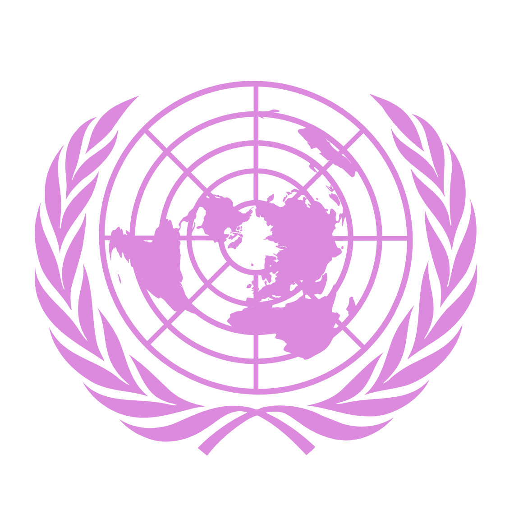

July 15th-19th 2024
Camp Model United Nations
Welcome to CampMUN, your gateway to immersive diplomacy, leadership training, and global engagement. Dive into debates, negotiations, and cultural exchange.

MUN is an extracurricular with so many benefits, and you can start today through CampMUN.

Model United Nations serves as a dynamic platform for honing public speaking skills, offering participants the invaluable opportunity to express their thoughts, advocate for positions, and engage in persuasive discourse on an array of global issues. Through spirited debates, formal speeches, and diplomatic negotiations, delegates learn to articulate their ideas with clarity, confidence, and conviction.
At the heart of Model United Nations lies the cultivation of critical thinking skills, as participants grapple with complex global challenges and engage in rigorous analysis to formulate viable solutions. By delving into multifaceted issues such as climate change, human rights, and geopolitical conflicts, delegates learn to assess information critically, evaluate competing arguments, and synthesize diverse perspectives.
Model United Nations offers a rich learning environment that encourages participants to delve into the depths of research, fostering a deeper understanding of global affairs and enhancing their analytical capabilities. Delegates immerse themselves in a wide range of topics—from disarmament to economic development—conducting comprehensive research to gather pertinent data, examine historical precedents, and explore policy alternatives.
Model United Nations competitions provide a platform for recognizing and celebrating excellence in diplomacy, negotiation, and leadership, fostering a spirit of friendly competition and camaraderie among participants. Through a combination of delegate performance, collaboration, and engagement, individuals vie for prestigious awards that acknowledge their mastery of diplomatic protocol, persuasive communication, and strategic thinking.
CAMPMUN first started when three high school Model UN leaders, Jamie Kim, Shreyas Jain, and Heman Bekele formed a Model United Nations summer camp. This small thought grew into something bigger, and that summer, CAMPMUN I was held virtually. From then on, CAMPMUN became an annual summer camp, hosting classes in person for students of diverse background and experiences.
CAMPMUN was nothing short of a successful week filled with fun activities and spirited debate. I got to collaborate with some of my closest friends and grow my Model UN experience through well taught lessons and a chaotic but exciting final conference. I couldn’t have asked for a better way to end the MUN season, and I can’t wait to return this year.

CAMPMUN was an incredible experience that helped me develop as a speaker, collaborator, and leader. From engaging mock committees to speaking activities to the conference itself, CAMPMUN will refine your skills in Model UN and beyond.
CampMUN was a great experience which helped me strengthen my own MUN skills as well as strengthen the bonds with my peers. The staff were supportive and helpful, and I look forward to attending again.
CAMPMUN was a transformative experience that will propel any hopeful delegate’s MUN career. The amount of experience and leadership provided by the amazing staff is unmatched. Over the course of the week I spent at CAMPMUN I, I learned a treasure trove of tips, tricks, and rules that I now use in every conference and even in real life too. I cannot recommend CAMPMUN enough, every class was amazing and informative and the conference was well run and exciting. CAMPMUN is a MUST for any aspiring delegate! 10/10!!!
CAMPMUN was a wonderful learning experience that included numerous speaking activities, a practice committee, and a final conference that remains one of my favorite MUN committees of all time. I learned a great deal about crisis tactics during the week of lessons, and my exploits in the conference laid the foundation for a strategy that I still use to this day. 10/10 would gavel again!
With its great staff, friendly attendees, and interesting committees, CampMUN was an absolute joy to attend. If you appreciate a quality Model UN experience, CampMUN is for you!
© CAMPMUN 2024